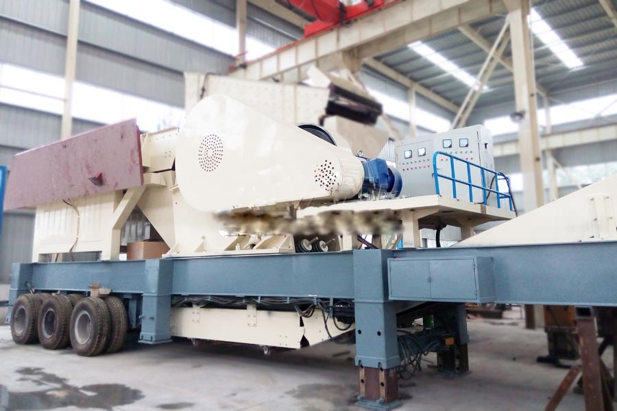

- Home >
- stone crusher >
- mobile jaw crusher china

Construction waste crushing production line

Mobile construction waste crushing station for urban construction waste crushing.
mobile jaw crusher china
Mobile jaw crushing plant introduction
The company developed the production of jaw mobile crusher is a new rock crushing and screening equipment, its design philosophy is to fully adapt to the mobile crushing, removal of barriers broken space, environment, basic configuration of customer crushing operations truly provide customers with simple, efficient and cost-rock crushing equipment.
Mainly used in metallurgy, chemicals, building materials, utilities and other materials often need to move processing operations, especially for highways, railways, hydropower engineering and other stone work flow, users can process raw materials according to the type, size and finished material requirements using a variety of different configurations.

mobile jaw crusher china structures
mobile jaw crusher china all parts of airborne, comprising: a solid frame, broken jaw crusher, feeder, vibrating screen, conveyor belts, motors and control boxes.
mobile jaw crusher china Features
1, YDS series high performance crusher
2, automotive feeder, vibrating screen, belt conveyor
3, pulling the steering shaft to facilitate road transport
4, vehicle installation support, device-site installation fast and convenient
5, supporting the installation of the motor and control box integration
mobile jaw crusher china technical parameters
| Model | Feeder Model | Model jaw crusher | Main belt Model | Maximum feed（mm） | Spout adjustment range(mm) | Production capacity(m³/h) | Motor Power(kw) | Shipping size(L×W×H)(mm) | Separators (optional) | Moving frame |
| YDS50 | GZT¬0724 | PE¬400×600 | B650×6M | 340 | 40¬100 | 10¬35 | 43 | 8600×2520×3770 | RCYD | Biaxial |
| YDS70 | GZT¬0932 | PE¬500×750 | B800×7M | 425 | 50¬100 | 25¬60 | 57 | 9600×2520×3500 | RCYD | Biaxial |
| YDS100 | GZT¬0940 | PE¬600×600 | B1000×8M | 500 | 95¬165 | 30¬85 | 72 | 11097×3759×3500 | RCYD | Biaxial |
| YDS180 | GZT¬1148 | PE¬750×1060 | B1000×11M | 630 | 80¬180 | 72¬150 | 147 | 13300×2900×4440 | RCYD | Triaxial |
Mobile jaw crusher station works
Material through the feeder evenly transported to the crusher, jaw crusher preliminary crushed by a round shaker constitute a closed system, to achieve recycling materials broken, finished material by the conveyor output, continuous crushing operations. Mobile jaw crusher according to the actual production of circular vibrating screen needs to be removed to realize the material directly preliminary crushing, convenience and other crushing equipment for use and flexible.
Leave Me A Message, Now
If you have any questions regarding equipment prices, production line configuration or other problems, you can send a message to us, we will contact you soon.